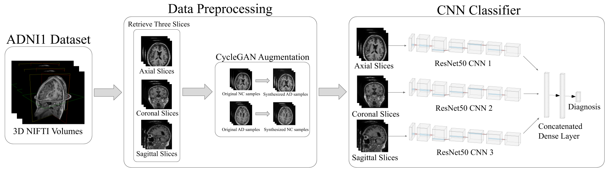

Diagnosing Alzheimer’s Disease using Deep Learning
2020 · Summer STEM Institute

An MRI based CNN architecture to diagnose Alzheimer's Disease using CycleGAN data augmentation. Serves as both a medical tool and a proof of concept for the use of GANs in data augmentation.
View Repo Read my Paper